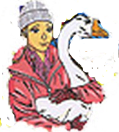

|

Катька (Екатерина Тихонова) - младшая сестра Вадьки и пятый сыщик в агентстве. Очень любит животных, особенно гусей. Именно благодаря Катьке ребята обзавелись собственным талисманом - белым гусем Харли, от которого и пошло название агентства. Упрямая, смелая и находчивая девчонка, чья пронырливость нередко помогала сыщикам раскрыть преступление. Однако саму Катьку очень расстраивает то, что коллеги её порой просто не воспринимают всерьез, ведь она на три года младше остальных ребят. Поэтому Катька из кожи лезет, чтобы доказать всем, и, особенно, своему брату, что она может вести расследования не хуже других. К тому же, Катька неравнодушна к Севке и очень обижается, что белобрысый на неё даже не смотрит. Порой дело доходит до скандала! Интересно, что к Кисоньке у Катьки никаких претензий нет - она ведь не виновата, что Севка такой дурак! Более того, чтобы привлечь Севкино внимание, Катька начала перенимать манеру общаться и имидж не у кого-нибуть, а именно у рыжей конкурентки. И надеется, что не получая никакой взаимности от Кисоньки, Севка в конце концов остынет и вот тогда... Впрочем этого ещё дождаться надо. |